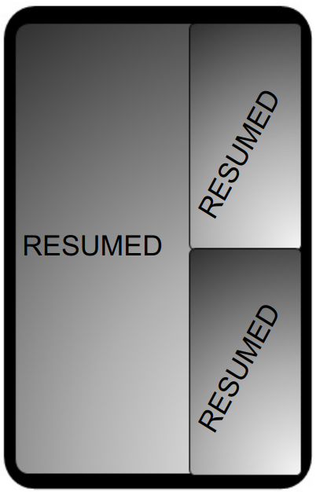
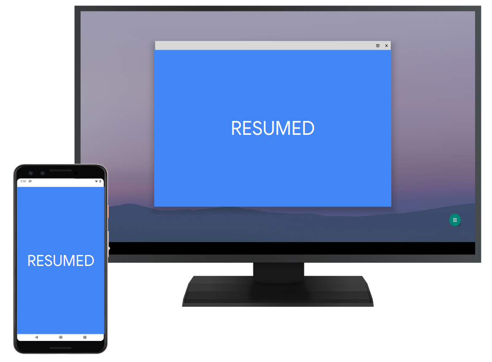

In Android 9 (and lower), apps were entered into the PAUSED state when:
- A new, translucent activity launched on top of the app, while the app was still visible (and, therefore, wasn't stopped).
- The activity lost focus, but was unobscured and could be interacted with by the user. For example, in multi-window mode, a number of activities can be visible and receive touch input simultaneously.
These situations differ in the amount of pausing an app must do but can't be distinguished at the app level.
In Android 10, all top-focusable activities in visible stacks reside in
the RESUMED state. This improves compatibility with
Multi-Window and MD modes for apps that use
onPause() instead of onStop() to stop refreshing the UI and interacting
with the user. This means:
- Both activities in split-screen are resumed.
- All top-visible activities in free-form windowing mode are resumed.
- Activities on multiple screens can be resumed at the same time.

Figure 1. Multi-resume on a foldable device

Figure 2. Multi-resume on in desktop mode
Activities can reside in the PAUSED state when they cannot be focused upon or are
partially occluded, such as:
- In a minimized split-screen (with launcher on side), the top activity isn't resumed because it's not focusable.
- In a picture-in-picture mode, the activity isn't resumed because it's not focusable.
- When activities are covered by other transparent activities in the same stack.
This approach indicates to apps that an activity can receive input from a
user only in the RESUMED state. Before Android 10,
activities could also receive input in the PAUSED state (for example, try touching
both activities in split-screen simultaneously on a device running Android 9).
To preserve the resumed signal from previous Android releases (and to communicate when apps should obtain access to exclusive-access or singleton resources), Android 10 includes a new callback:
Activity#onTopResumedActivityChanged(boolean onTop)
When invoked, this callback is called between Activity#onResume()
and Activity#onPause(). This callback is optional and can be skipped,
so an activity can go from a RESUMED to a PAUSED state
without becoming the topmost in the system. For example, in multi-window mode.
Because this callback is optional, it's not part of the Activity
Lifecycle and should be rarely used.
The previous top-resumed activity receives and finishes execution of
onTopResumedActivity(false) before the next top-resumed activity
receives onTopResumedActivity(true) unless the previous activity
takes too much time to handle the method call and hits the 500 ms timeout.
Compatibility
To maintain compatibility when implementing multi-resume, consider these solutions.
Multiple resumed activities in one app process
- Issue. In Android 9 and lower, only one activity in the system is resumed at a time. All transitions between activities involve pausing an activity before resuming another. Some apps and frameworks (such as Flutter, or Android's LocalActivityManager) use this fact, and store state about the resumed activity in singletons.
- Solution. In Android 9 and lower, if two activities from the same process are both resumed, the system only resumes the activity that's higher in Z-order. Apps targeting Android 10 can support multiple activities being resumed at the same time.
Simultaneous camera access
- Issues. These issues are also present in Android 9 and
lower. For example, a fullscreen and resumed activity can lose camera focus to a
paused activity on top in picture-in-picture mode but become more exposed with
wider adoption of multi-window and multi-display modes.
- Due to changes made to the
RESUMEstate, apps may be disconnected from the camera even while resumed. To address this, apps must handle a camera disconnect without crashing. When disconnected, apps get a disconnected callback and all calls into the API start throwingCameraAccessException. resizeableActivity=falseisn't a guarantee of exclusive camera access, because other apps using the camera can be opened on other displays.
- Due to changes made to the
- Solutions. Developers should include logic for when an app
is disconnected from the camera. If an app is disconnected from the camera, it
should watch camera availability callbacks to try to reconnect and continue
camera use. In addition to the existing
CameraManager#AvailabilityCallback#onCameraAvailable()callback, Android 10 addedCameraManager#AvailabilityCallback#onCameraAccessPrioritiesChanged(), which covers the case when focus (and camera priority) switches between several resumed activities. App developers should use both of these callbacks to determine a good time to try to get access to the camera.
Multi-resume
In Android 10, the activity lifecycle state is determined by visibility and
Z-order. To ensure that the correct state after visibility updates on an
activity and evaluate which lifecycle state is applicable, invoke the
ActivityRecord#makeActiveIfNeeded() method from different
locations. In Android 10, active means either RESUMED or
PAUSED and works only in these two instances.
In Android 10, resuming an activity is separately tracked in each stack
instead of in the single location in the system. This is because several
activity transitions can be performed simultaneously in multi-window modes. For
details, see ActivityStack#mInResumeTopActivity.
Top-resumed activity callback
After actions that can result in a top activity change (such as activity
launch, resuming, or Z-order change),
ActivityStackSupervisor#updateTopResumedActivityIfNeeded()code> is invoked. This
method checks if the topmost resumed activity changed and performs the update if
needed. If the previous top-resumed activity hasn't release the top-resumed
state, then a top-resumed-state-loss message is sent to it and a timeout is
scheduled on the server side
(ActivityStackSupervisor#scheduleTopResumedStateLossTimeout()code>).
A report of the top-resumed state is sent to the next activity after the previous
one released the state, or when a timeout was hit (see usages of:
ActivityStackSupervisor#scheduleTopResumedActivityStateIfNeeded()
A new TopResumedActivityChangeItem transaction item was added
to report top-resumed state changes to clients and leverages the
ActivityLifecycler architecture from Android 9.
The top-resumed state is stored on the client side, and each time the
activity transitions to RESUMED or PAUSED it also
checks whether the onTopResumedActivityChanged() callback should be
invoked. This enables certain decoupling in the communication of lifecycle states
and the top-resumed state between the server and client sides.